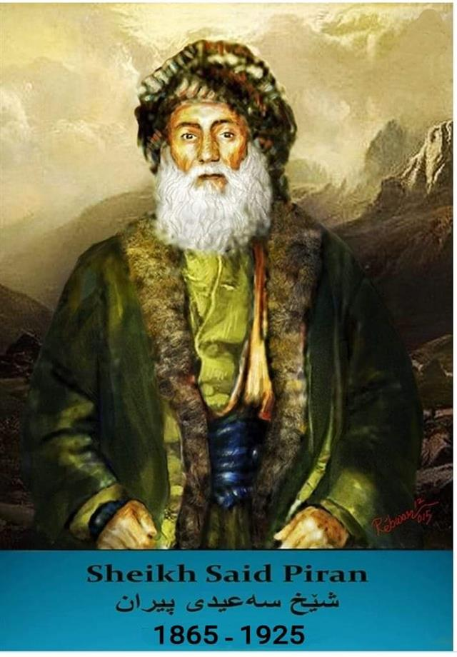

شێخ سەعیدی پیران

شێخ سەعیدی پیران (١٨٦٥ – ٢٩ی حوزەیرانی ١٩٢٥ لە ئامەد) شۆڕشگێڕێکی کورد بوو کە لە ١٩٢٥دا بە یارمەتیی ژمارەیەکی زۆری پێشمەرگە دژ بە حکوومەتی کۆماری تورکیا شۆڕشی کرد و بۆ ماوەیەکی زۆر گەمارۆی شاری ئامەدیان دا بەڵام ھێزەکەیان تێکشکا و پاشان شێخ سەعید لە سێدارە درا.
ژیان
شیخ سەعید ساڵی ١٨٦٥ لە ناوچەی پاڵوو لەدایکبووە. یەکێکە لە شێخە بەرزەکانی نەقشبەندی. لە پاش مردنی باپیرەی شیخ عەلی، باوکی ناوچەی پاڵووی بەجێ ھێشتووە و ڕووی کردووەتە شاری
خنیس. شێخ سەعید خوێندنی دینی لەو شارە تەواو کردوە، پایە و ڕیزی کۆمەڵایەتی شێخ و زیرەکی و لێھاتوویی و دەوڵەمەندی بووەتە ھوی سەرەکی بۆ ئەوەی کۆمەڵەی سەرخۆبوون پەیوەندییەکی ڕاستەوخۆ و پتەو بە شێخ سەعیدەوە بکات لە کۆتایی ھاوینی ١٩٢٣ یوسف زیبا کە سەرۆکێکی بزووتنەوەی کورد و نائیبی کۆنی شاری بەتلیس بووە لە پەرڵەمانی تورکیادا، چووەتە خنیس بۆ
خزمەتی شێخ سەعید و ڕێکەوتوون لەسەر ئەوەی بڕیاری ھەڵگیرسانی شۆرشێکی نوێ بدەن. لە زستانی ١٩٢٣ تا ١٩٢٤ سەرۆک ھۆزەکان و ئەندامە چالاکەکانی کۆمەڵەی سەرخۆبوون کۆبوونەوەی فراوانیان لە ناوچەی پاڵوو بەست کە تێیدا باس لە فراوانکردن و خۆسازدان بوو بۆ چالاکی کردن لە پێناو بزووتنەوەی نھێنی و خۆ ئامادە کردن بۆ ڕاپەڕینی نۆی بۆ سەربەخۆیی کوردستان.
ئەم کارو بڕیارەش تا ڕادەیەکی بەر فراوان بە یارمەتی شێخ مەحموودی حەفید و سمکۆی شکاک بوو، ھەروەھا بڕیار درا نووسراوەیەک دەربارەی پاڵپشتی نەتەوەی کورد بۆ کۆمەڵەی نەتەوەکان
(عیبە الامم) بنێرن خالید جەبری و یوسف زیبا چالاکترین ئەندامانی کۆمەڵەی سەرخۆبون بوون کە ھەموو بڕیارە گرینگەکانی کۆمەڵەیان دەگەیاندە دوورترین ناوچەکانی کوردستان و ئامادەیییەکی ھەمیشەییان لە نێوان سەرۆک ھوزەکاندا پەیدا کردبوو، ھەروەھا پەیوەندییان لەگەڵ پارتی جمھووری پێشکەوتووی تورکیا پەیدا کردبوو کە لە تشرینی دووەمی ١٩٢٥ دامەزرابوو، بەڵام بەھۆی
خیانەتکاری سەرۆکەکانی ھۆزی خورمیک کە دەنگوباس و خوئامادەکردنی گەیاندە یاساوڵانی ڕژیمی تورکیا، بە بڕیاری مستەفا کەمال ئەتاتورک، یوسف زیبا و خالید جەبری بەگ گیران و ڕەوانەی زیندانی بەتلیس کران، لە پاش گرتنی ئەم دوو سەرکردەیە کۆمەڵە وەک پیویستییەکی گرنگ بە پەلە بریاری دا کە شیخ سەعیدی پیران ھەڵبژێردرێت و بکرێت بە سەرۆکی کۆمەڵەی سەرخۆبوون.
شۆڕشی شێخ سەعید
شیخ سەعید لە پاش ھەڵبژاردنی بە سەروکی کۆمەڵە بڕیاری ھەڵگیرسانی بزووتنەوەی چەکدارانەی دا، بەڵام زیاتر دەیویست بڕیارەکە مۆرکی کوردستانی گەورەی پێوە دیاربێت لەبەر ئەوە عەلیڕەزای کوڕی ناردە شارەکانی ئامەد و حەڵەب بۆ زانینی بیروبۆچوونی سەرۆکەکانی کوردی سووریا و عیراق و ئیران بۆ زیاتر ڕێک کەوتن لەسەر کاتی گشتی ڕاپەڕینەکە.
لە پاش کوبونەوەیەکی گەورە لە شاری حەڵەب، ھەمووان گەیشتنە ئەو باوەڕەی کە مافی نەتەوایەتی گەلی کورد بەبێ شورشێکی چەکدارانە
مەحاڵە مسۆگەر بکرێت. پاشان، ڕوژی ٢١ ئازاری ساڵی ١٩٢٥ دانرا بە یەکەم ڕوژی ھەڵگیرسانی شۆرش. لە نیوەی دوەمی مانگی یەکەمی ساڵی ١٩٢٥ دا شێخ سەعید گەشتێکی بەزۆربەی ناوچەکانی کوردستاندا کرد، دەچووە ھەر ناوچەیەک بە کومەڵ لایەنگر و دۆست ڕوویان تێ دەکرد. لە ٥ی شوباتی ١٩٢٥ شیخ سەعید خانیی بەجێ ھیشت لەگەڵ سەد سوارە بەرەو گوندی پیران بەڕی
کەوتن بۆ ماڵی عەبدول ڕەحیمی برای. ھەر لەو شەودا مەفرەزەیەکی سوپای تورک بەسەرۆکایەتی حوسنی ئەفەندی و مستەفا عالیم کە ھاتبوون بۆ گرتنی چەند کەسێک لە گوندنشینەکان. شێخ سەعید ڕازی نەبوو کە کەس بگیرێ. ئەمە بوە ھوی ئەوەی کە ھەر دوو لا سەنگەر لەیەک بگرن. لەپاش شەڕوتەقە کردن چەندەھا کەس لە مەفرەزەی دوژمن کوژران و ئەوانی تریش بە ئەسیری گیران.
ئەم ڕوداوە لەپڕە بووە ھوی ڕێگرێکی
سەرەکی ناوەخت لە کامل نەبوونی خۆ ئامادە کردنی ڕاپەڕینەکەی شێخ سەعید. کاتێک شێخ تایەری برای شێخ سەعید ئەم ھەواڵەی بیست، بێ وەستان و چاوەڕوانی لە ١٠ی شوباتی ئەو ساڵەدا کونتڕوڵی شاروچکەی لیچەی کرد و دەستی بەسەر گشت پارە و نووسین و نامە و تەلگرافی نھێنی ڕژێمدا گرت، لە ڕوژی ١١ی شوباتدا، لەگەڵ دوو سەد ھەزار سوارە چوونە خزمەت شێخ.
ئەم ڕوودا و ھۆکارانە بوونە ھۆی سست بوونی ھەندێ کاری شۆرشەکە ڕێگەیان لەدوا خستنی شۆرشەکە گرت بۆیە شێخ سەعید بە ناچاری
پێش وەخت بڕیاری دەستپێکردنی ڕاپەڕینەکەی دا، بەپێی ئامارێکی ئەو کاتە، ژمارەی پێشمەرگە کوردەکان تەنیا لە چوار ولایەدا نزیکەی شەش سەد ھەزار کەس بوون بەرامبەر ژمارەی ھێزی تورکەکان کە لە سەد ھەزار کەمتر بوون. لەم ناوچانەدا نەتەوەی چەرکەس و عەرەب و ئەرمەنیشی تێدابوو، ئەم کەمینە نەتەوانەش زۆر چەوساوە و زوڵم لێکراوی ژێر دەسەڵاتی تورک
بوون بۆیە زۆربەیان لە شۆڕشەکەدا بەشدار بوون و شێخ سەعید سەروکایەتی سوارە پێشمەرگەکانی حاجی حەسەن و عەمەری خارۆ ھۆزی مەستان و بۆتانی باشووری چیای کوچەرانی دەکرد. ھێزی ساڵح بەگی خانی ھێزەکانی شێخ شەمسەدینیش ھاتنە ناوچەی مادن و شێخ ئەیوبیش لەگەڵ ھەزاران سوارەی پێشمەرگە چوونە ناو ڕیزەکانی شێخ عەبدول ڕەحیمی برای شێخ سەعید.
بەرەو ڕزگارکردنی شاری ئامەد ڕۆیشتن، شیخ سەعید لەسەرەتاوە ھەستی کرد کە ھێزەکانی لە توانایان نییە ئامەد ڕزگار بکەن بۆیە بیری لە ڕیگای تر کردەوە. بۆ ئەمەش کەوتبووە گفتوگۆ کردن لەگەڵ حکوومەتی تورک تا بواریکی لەبار بۆ ڕاپەڕینی کوردەکانی ناو شارەکە بڕەخسێنێ. ھەر چەندە بوار و ڕێگا نەبوو بۆ گەیاندنی ھیچ جۆرە چەکێک بۆ خەڵکانی ناو شارەکە،
گەمارۆدانی شارەکەش زۆری کێشا، سوپای دوژمنیش لەناو شارەکەدا ڕازی نەبوون کە دەستبەرداری بەرەنگاری و خۆڕاگرتن ببن، لە سەرەتای مانگی ئازارەوە پێشمەرگە ھێرشی دەست پێکرد بەڵام خۆڕاگری سوپای تورک زۆری خایاند، لە دەرگای ماردینی شارەوە کەرتێکی پێشمەرگە و خەڵکی شار یەکتریان گرتەوەو کەوتنە پەلامار بۆسەر سوپای دوژمن، تورکەکان
سەنگەری پتەویان لێدابوو، لە ھەمان کاتدا خاوەنی سەدان چەکی نوێ بوون و توانای سەرکەوتنیان زیاتر بوو، لە پاش شەرێکی قورس و کوژرانی ژمارەیەکی زۆر لە ھەردوولا، کەرتی ھێرش بەری پێشمەرگە و خەلک ملیان دایە بەر پاشە کشەکردن و گەڕانەوە دواوە لە پاش دوو سێ ھێرش پێشمەرگەکان کە تێدا سەرنەکەوتن، بە تەواوی بڕیاری وازھێنان لە گەماروی شارەکە درا.
ڕیزەکانی شورش ڕۆژ لە دوای ڕۆژ بەرەو شپرزەیی و پەرش و بڵاوی دەچوو، بە تایبەتی کاتێک سوپای دوژمن لە باکوور و باشوورەوە بە ھێزی زۆر ھێرشیان ھێنا و گەماروکەیان پێچەوانە کردەوە. لە کۆتایی مانگی نیسان بەھۆی خیانەتی سەرۆکی ھۆزی جبرانان و
قاسم بەگی جبرانەوە، شێخ سەعید، شێخ عەبدوڵا، عەلی غالب، ڕەشید ئاغا و ٢٦ شۆرشگێڕی تر لەسەر پردی چەمی مۆراچ لە ناوچەی گەنج بەدیلی گیران. لەدوای دادگایکردنی شێخ سەعید و ھاورێکانی لە کۆتایی مانگی ئایارەوە کە دەستی پێکرد و ماوەی یەک مانگی خایاند، جگە لە شێخ سەعید، ٤٧ تێکۆشەری کورد بڕیاری لەسێدارەدانی دەرکرا و لە دیاربەکر لە سێدارە دران.